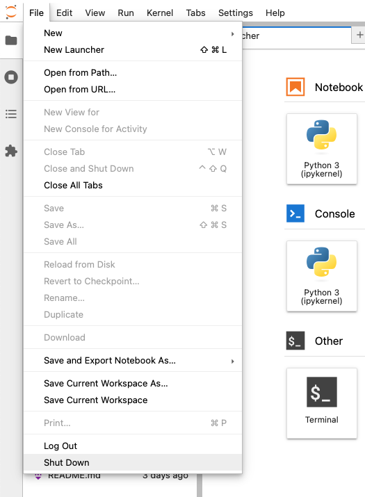

Infrastructure
The course does not use any university-specific resources. It is designed to run entirely on students’ machines using solely open-source software.
Communication
Students enrolled in the course at Charles University will be invited to a dedicated Discord server for online discussion. Students are encouraged to use the platform to seek help from peers, share thoughts and tips, and other meaningful contributions the rest of the group can benefit from. Learn from the mistakes of the others.
The tutor will be part of the discussion forum but the priority is to help each other, rather than seek guidance outside of class.
Code management and submissions
The course will be using GitHub Classroom. Each student will have their own code repository managed by the Classroom which will eventually contain all submissions. Part of the repository will be a definition of the software stack.
Software stack
There are many options on how to run Python. You may already have a copy on your machine, you can run it in the browser and install it in a myriad ways. This course uses what is considered a standard for scientific computing based on two key components - a package manager (you will be using Pixi) and an interface (Jupyter Lab).
The basics will be explained in the first lesson.
1. Install Pixi
The main tool dealing with the setup of the coding environment used in this course is Pixi. Go to Pixi website, and follow the installation instructions to install it on your machines.
2. Install Github Desktop
To manage the repositories and Git, the easiest option is to use GitHub Desktop. Get it installed.
3. Ensure you have a GitHub account
To use GitHub Classroom, you will need a GitHub account. Get one on github.com if you don’t have it already.
4. Accept the assignment in the GitHub Classroom
You have received a link with the invitation to accept the assignment. Click on it. You may need to authorise GitHub Classroom with GitHub.
5. Get the repository and install the environment
GitHub Classroom automatically created a repository you should be using during this course. The repository contains the definition of the environment and a placeholder structure for your work.
- Clone the repository to a location on your machine where you’d like to store the files for this course.
- Use Powershell or Terminal to navigate to the folder.
- Install the enviroment using
pixi install. - Start the Jupyter Lab interface using
pixi run jupyter lab.
That is all!
Closing and reopening Jupyter Lab
The best way to close the Jupyter Lab and shut down its process running in the terminal is to use the Jupyter Lab’s interface. In the menu find File > Shut Down.

Next time, navigate to the folder and run pixi run jupyter lab again.
If you prefer to use conda over Pixi, you can follow the instructions below.
If you have Anaconda, conda, or mamba installed, use that directly. Just start Anaconda Prompt (or any other relevant prompt) or Terminal and start with the point Create a Python environment.
Windows may complain that the app is not recognised. Click More information and you will be able to run the installer.
- Download
minicondapackage manager from Anaconda for your operating system. - Execute the installer and make sure to create start menu shortcuts (there’s a tick box during installation).
- Open the installed
Anaconda Promptapplication. - Configure
condato avoid automatic activation of the base environment. You should never use it to avoid issues in the future.
conda config --set auto_activate_base false- Create a Python environment using the following command:
conda env create -f https://martinfleischmann.net/sds/environment.yml- Activate the environment using:
conda activate sds- Start JupyterLab interface:
jupyter labEnsure that you install miniconda in a directory without any special characters in the name. It may occasionally break things.
- Download
minicondapackage manager from Anaconda for your operating system and install it. - Open
Terminalapplication. - Configure
condato avoid automatic activation of the base environment. You should never use it to avoid issues in the future.
conda config --set auto_activate_base false- Create a Python environment using the following command:
conda env create -f https://martinfleischmann.net/sds/environment.yml- Activate the environment using:
conda activate sds- Start JupyterLab interface:
jupyter labA Jupyter Lab interface will show up in your browser. If it hasn’t opened automatically, copy the link printed in your command line/terminal.
Closing Jupyter Lab
The best way to close the Jupyter Lab and shut down its process running in the terminal is to use the Jupyter Lab’s interface. In the menu find File > Shut Down.
Opening Jupyter Lab next time
The steps above are needed only the first time. Once you create the environment, it won’t disappear and you can use it until you don’t delete it. Once you close Jupyter Lab session, you can always start a new one:
- Open
Anaconda Prompt - Activate the environment:
conda activate sds- Start JupyterLab interface:
jupyter lab- Open
Terminal - Activate the environment:
conda activate sds- Start JupyterLab interface:
jupyter labYou should never use conda install in the base environment. Remember to always activate the environment.
Plan B with Google Colab
If you are unable to install an environment using the instructions above, you can follow the course using Google Colab. You will just need to install the required packages to your Colab environment. Reach out in class or via Discord if you need to set it up.
Troubleshooting
In case of any issues related to environment creation, reach out in the class or via Discord.